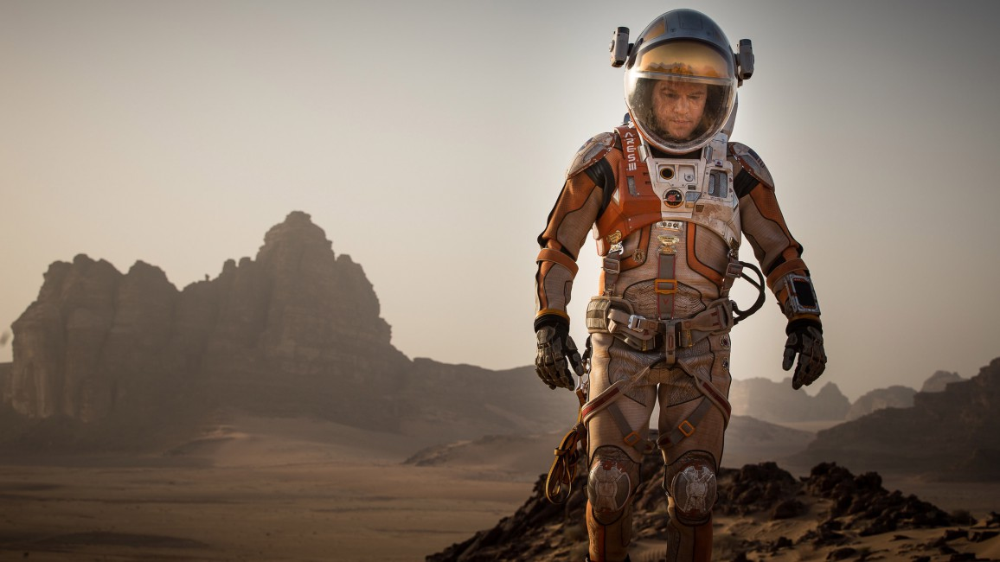

Marslı - The Martian

Blade Runner ve Alien gibi kültleşmiş bilimkurgu filmleriyle günümüzün en tanınan simalarından biri olan Ridley Scott, The Martian – Marslı ile yeniden bilimkurgu çekeceğini duyurduğunda, özellikle de Nolan’ın Interstaller’ının ardından epey bir ilgi uyandırmıştı. Hele ki başrolde, aynı zamanda Interstellar’da yer alan Matt Damon da olunca iki film arasında belli belirsiz bir bağ hemen kuruldu haliyle. Ama daha en baştan söyleyebiliriz ki iki film arasında en ufak bir benzerlik dahi yok. Yalnızca konu anlamında da değil, yönetmenlik ve sanat yönetimi gibi farklı sinemasal unsurlarda da kendini gösteren bir fark söz konusu.
Bahsettiğimiz mesele Ridley Scott ve onun bilimkurgu filmi olunca, oldukça görkemli ve epik bir filmle karşılaşmayı bekledik belli belirsiz aslında. Nihayetinde fragmandaki anlatı da bir noktada buna hizmet ediyordu. Fakat Marslı daha ilk sahnesinden itibaren bundan çok farklı bir konumda olduğunu gösteriyor. Hatta öyle ki filmin türü olarak bilimkurgunun yanına aksiyon veya macera demeden önce komedi yazmak en doğrusu olur. Çünkü iki saati aşan süresinde, ağırlıklı olarak son bölümlerinde farklı bir noktaya sürüklense de filmin baskın türü, çok açık bir şekilde mizaha sırtını dayıyor. Ama bu elbette ki bir handikap olarak değerlendirilmemeli. Her ne kadar uyandırılan ilk izlenimlerden farklı bir izlekte ilerlese de ortaya koyduğu mizah oldukça keyifli.
Ani bir fırtına sonrası iptal edilen görevde bir kaza sonucu geride kalan Mark (Matt Damon), imkansız koşullar göz önüne alınıp öldü olarak kabul edilir. Fakat mucizevi bir şekilde hayatta kalır ve dahası fırtınadan zarar görmeyen üste uzun süre yaşamasını sağlayacak şartlarla karşılaşır. Bundan sonrası tahmin edileceği üzere; Mark’ın hayatta kalma mücadelesi, akabinde dünyayla iletişim kurmaya çalışması ve nihayetinde kurtarma operasyonun düzenlenmesi olarak ilerliyor. Bu açıdan bakıldığında aslında Marslı pek de yeni bir hikaye anlatmıyor. Öyle ki, uzay teması dışındaki binlerce hayatta kalma hikayesini saymasak bile; aynı hikayenin uzay versiyonuna defalarca şahit olduk. Belki biraz da bu yüzden Scott, hikayenin görkemini açığa çıkarmak yerine mizahi bir yaklaşımla keyifli bir anlatı sunmayı seçiyor.

Filmin hikayesi ve ona bağlı olarak seçilen anlatı tarzını göz önüne aldığımızda, temel olarak iki bölüm karşımıza çıkıyor.Haliyle de yaklaşık ilk bir saati oluşturan; Mark’ın, hayatta kalma mücadelesini pek de ciddiye almayan mizahi tavrı ve son kısmını oluşturan hikayenin toparlanması adına garip bir aksiyon ve epik anlatının oluşturulması Marslı’nın bütüncül bir anlatıya ulaşmasını engelliyor. Bu noktada filmle ilgili muhtemel iki görüşün ortaya çıkacağına hiç kuşku yok. Çünkü Scott, Marslı’yı tam da kitabına uygun olarak çekiyor aslında. Buradaki sıkıntı bu kitabın seksenli yıllarda kalmış olması. Bu yüzden filmi tür içinde değerlendirirsek başarılı diyebiliriz belki, ama artık 2015 yılına gelmiş bir durumda olarak, ortaya konan ilk okul zekasındaki söylemleri ciddiye almak pek de mümkün değil. Zamanında Sovyet’lere işaret eden kızıl düşman tavrı ve sonunda hümanizme bağlanan kardeşlik vurgusu ama alttan alta hala devam eden faşistçe söylemler, artık Sovyetler Birliği’nin esamesi okunmadığı için Çin’e yönelmiş. Bunun dışında da daha önce izlediğimiz onlarca filmden hiçbir farkı yok açıkçası Marslı’nın. Hatta yirmi milyondan fazla insanın öldüğü İkinci Dünya Savaşı zaferinden sonra New York meydanını dolduran kalabalıktan daha büyük bir kalabalığın pür dikkat Mark’ın kurtarılışını izlemesi gibi neresinden tutsanız elinizde kalacak sahneleri düşündüğümüzde tam olarak nereye geldiğinizi düşünmeniz bile gayet olası.
Bu açıdan bakıldığında, özellikle hikayenin nihayete erdiği ikinci kısmın ağır vasatlığı; ilk bölümdeki komediden alınan hazzı da ister istemez baltalıyor. Marslı için en bahtsız durum da bu olsa gerek; çünkü ilk bölümdeki, Iron Man’den Yüzüklerin Efendisi’ne dek uzanan popüler kültür göndermeli espiriler gerçekten de oldukça eğlenceli. Ayrıca bu ilk bölümün en önemli özelliği de filmin kendini pek ciddiye almaması. Öyle ki birçok noktada bilimkurgu türüne has anlatıyla bizzat dalga dahi geçiliyor. Ama işte ne zaman ki film kendini ciddiye alıp anlattığı hikayeyi ön plana çıkarmaya başlıyor, tüm o mizahi üslup hikayenin vasatlığının kurbanı oluyor.
Marslı, Ridley Scott ismi ile düşünüldüğünde kesinlikle bekleneni vermekten çok çok uzakta bir yapım. Tek başarılı olduğu mizahi bölümler de, Ridley Scott gibi deneyimli bir yönetmen için çok basit kalıyor. Tabii devamındaki berbatlık düşünüldüğünde buna bile razı olmaya meyil ediyor insan. En nihayetinde Marslı’yı, her yıl bolca çekilen çerez filmlerden biri olarak pek de üzerinde konuşulmayı hak etmeyen bir yapım şeklinde özetlemek çok da yanlış olmaz. Başlarındaki komedi bölümlerinde keyif almak adına bir saatlik sabır testine tabi olmak isteyenler için ideal.
 Interstellar
Interstellar Oblivion
Oblivion Arrival
Arrival Mad Max
Mad Max Upgrade
Upgrade John Wick
John Wick Deadpool
Deadpool SAW
SAW The Conjuring
The Conjuring Get Out
Get Out Us
Us Zootopia
Zootopia The Incredibles
The Incredibles Inside Out
Inside Out Spider-Man
Spider-Man.svg)